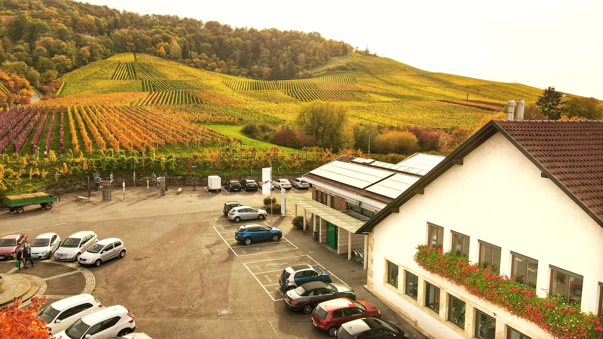

Fellbacher Weingärtner
Die Fellbacher Weingärtner sind eine traditionsreiche Winzergenossenschaft in Fellbach (Baden-Württemberg), gegründet 1858, um die Qualität und Vermarktung der Weine zu verbessern. Heute bewirtschaften ihre Mitglieder rund 185 Hektar, hauptsächlich am Kappelberg (u.a. Lagen wie Goldberg und Lämmler), und produzieren zu etwa 70 % Rotweine wie Trollinger und Lemberger, ergänzt durch Weißweine wie Riesling und Müller-Thurgau. Die Genossenschaft zeichnet sich durch eine Philosophie authentischer, terroir-geprägter Weine aus, die durch sorgfältige Arbeit im Weinberg und zurückhaltende Kellertechnik entstehen.
Gründung und Geschichte
Gegründet 1858 von 50 Winzern, um die Qualität ihrer Weine zu steigern und die Vermarktung zu verbessern. Die Genossenschaft ist eine der ältesten und zweitältesten in Württemberg. Die Genossenschaft spielte eine entscheidende Rolle bei der Modernisierung des Weinbaus in Württemberg. Durch die Einführung moderner Techniken und gemeinsamer Qualitätsstandards trug sie maßgeblich dazu bei, die Weinkultur der Region zu stärken.
Mitglieder und Rebflächen
Die Genossenschaft hat aktuell rund 274 Mitglieder. Diese Mitglieder bewirtschaften gemeinsam eine Fläche von etwa 185 Hektar, die größtenteils im Gebiet der Weinbaugemeinde Fellbach liegt. Ein Großteil dieser Rebflächen befindet sich am Kappelberg, der die Landschaft um Fellbach prägt. Dieses Gebiet ist bekannt für seine Top-Lagen wie Fellbacher Lämmler und Fellbacher Goldberg, die zu den besten in Deutschland zählen.
Lagen und Rebsorten
Die Fellbacher Weingärtner konzentrieren sich auf renommierte Weinberg-Standorte wie den Fellbacher Goldberg und den Lämmler, die beide am Kappelberg liegen. Diese Lagen sind für ihr einzigartiges Terroir aus Keuperböden bekannt, das den Weinen eine besondere Mineralität verleiht. Der Anbau ist zu etwa 70 % auf Rotweine ausgerichtet, wobei die dominierenden Sorten der Trollinger (der fast die Hälfte der Rebfläche einnimmt) und der Lemberger sind. Ergänzt wird das Rotweinsortiment durch Spätburgunder und Portugieser. Der verbleibende Anteil von 30 % entfällt auf Weißweine, allen voran der Riesling mit seiner lebendigen Säure, gefolgt von Sorten wie Müller-Thurgau, Silvaner und Kerner, die die Vielfalt des Portfolios unterstreichen.
Qualität und Philosophie
Das Hauptziel der Fellbacher Weingärtner ist die Erzeugung von authentischen Weinen mit ausgeprägtem Herkunftscharakter und hoher Qualität. Diese Philosophie beginnt bereits im Weinberg, wo durch nachhaltige Bewirtschaftung und eine intensive, aber schonende Pflege der Reben die Grundlage für gesundes Traubengut geschaffen wird. Im Weinkeller setzt man auf eine schonende und zurückhaltende Kellertechnik, um die natürlichen Eigenheiten der Rebsorten und des Bodens bestmöglich zur Geltung zu bringen. Man verzichtet auf unnötige Eingriffe, um die Weine in ihrer Reifung nicht zu stören. Diese konsequente Qualitätsarbeit wurde mehrfach mit Auszeichnungen von renommierten Weinführern wie Eichelmann und Gault&Millau sowie mit Preisen wie dem VINUM Deutsche Rotweinpreis gewürdigt, was die hohe Qualität und den Anspruch der Genossenschaft unterstreicht.
Auszeichnungen и Besonderheiten
Zahlreiche Auszeichnungen, darunter der VINUM Deutsche Rotweinpreis und der Titel "Bester Trollinger Deutschlands". Mitglied der Initiative „Echt Württemberger“. Bieten neben einem breiten Weinsortiment auch diverse Veranstaltungen wie Weinproben, Weinberg-Touren und eine Offenausschank-Möglichkeit in der Neuen Kelter an. Sind auch Business-Partner des VfB Stuttgart.